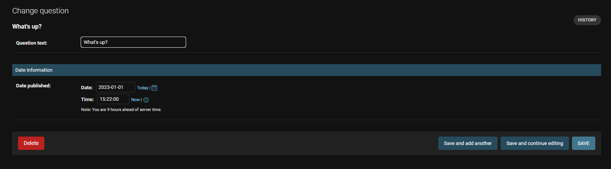
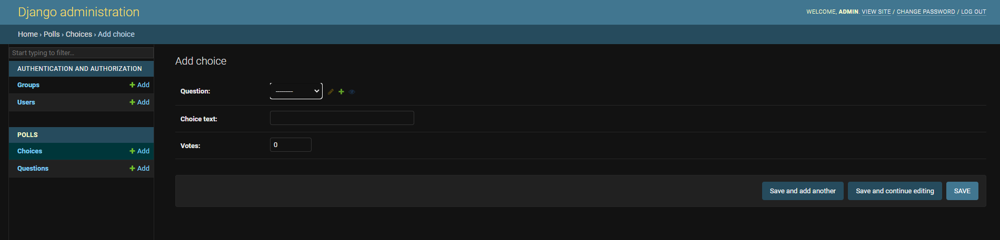
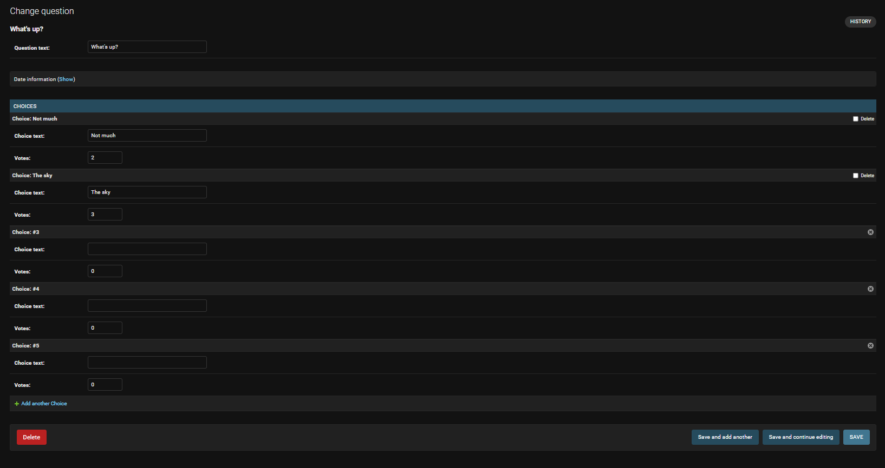
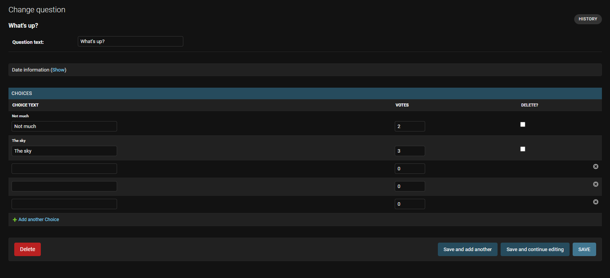
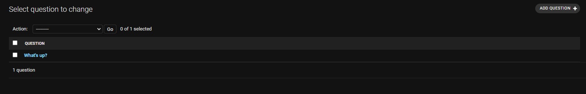
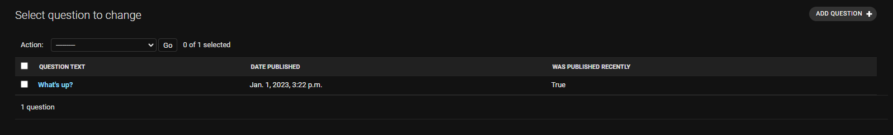
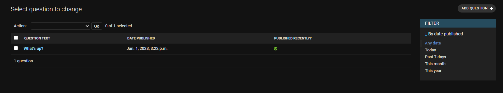
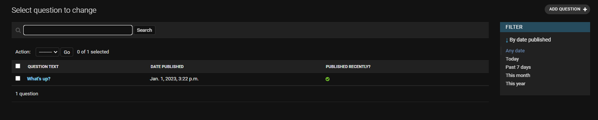

7.管理サイトのカスタマイズ#
admin フォームのカスタマイズ#
admin.site.register(Question) の呼び出しによって Question モデルを登録したことで、Django はデフォルトの形式でオブジェクトを表示できた。
admin フォームの表示方法や操作の仕方をデフォルトから変更したいこともよくあるが、それには、オブジェクトを登録する時にオプションを指定する。
例として、編集フォームでのフィールドの並び順を並べ替えてみる。
admin.site.register(Question) の行を以下のように置き換える
from django.contrib import admin
from .models import Question
class QuestionAdmin(admin.ModelAdmin):
fields = ['pub_date', 'question_text']
admin.site.register(Question, QuestionAdmin)
このように、モデルの admin のオプションを変更したいときには、モデルごとに admin クラスを作成して、 admin.site.register() の 2 番目の引数に渡すと いうパターンに従うこと。
上の例では、「Publication date」フィールドの表示位置を「Question」フィールドよりも前に変更している。
http://127.0.0.1:8000/admin/で管理画面にアクセスし確認。
{kind=link}
2つしかフィールドがないので、あまりぱっとした変化ではない。 しかし admin フォームで数十ものフィールドを操作するような場合には、直感的なフィー ルドの並び順というものはユーザビリティ上重要な要素となる。 また、数十ものフィールドがある場合、フォームを複数のフィールドセットに分割したい場面もあるだろう。 以下コードを編集し再度確認してみる。
from django.contrib import admin
from .models import Question
class QuestionAdmin(admin.ModelAdmin):
fieldsets = [
(None, {'fields': ['question_text']}),
('Date information', {'fields': ['pub_date']}),
]
admin.site.register(Question, QuestionAdmin)
fieldsetsの各タプルの先頭の要素は フィールドセットのタイトルにあたる。 フォームは以下のように表示される。

リレーションを張ったオブジェクトの追加#
Question は複数の Choice を持つのに、管理ページには表示されていない。これは表示するよう変更が可能。 これには、2つの方法がある。1つ目は、 Question と同じようにadminに Choice を登録する方法:
from django.contrib import admin
from .models import Choice, Question
# ...
admin.site.register(Choice)
これで、 Django の管理サイト上で「Choice」 を選べます。「Choice の追加」フォーム は以下のようになる。

このフォームでは「Question」フィールドは選択ボックスで、データベース上の全ての質問を選択できます。
Django は ForeignKey を表示する時には <select> ボックスを使わねばならないということを知っているのです。
今の時点では、 Question はデータベース上に一つしかないはずですね。
Question フィールドの隣に「もう一つ追加 (Add Another)」リンクがあるのに注意してください。 ForeignKey の関係にあるオブジェクトなら、何もしなくてもこのリンクが表示されます。 「もう一つ追加」をクリックすると、「Poll を追加 (Add poll)」というポップアップウィンドウを表示します。 このウィンドウで Poll を追加して「保存」を押すと、 Django は Poll をデータベースに保存して、もとの 「Choice の追加」フォームに選択済みの項目として動的に追加します。
しかし、この方法は Choice オブジェクトをシステムに追加するには効率的ではありません。 Question オブジェクトを追加する時に Choice をひと揃い追加できた方が便利ですよね。そうしてみましょう。 Choice モデルに対する register() を削除して、 Question の登録する部分を以下のように書き換えてください。
from django.contrib import admin
from .models import Choice, Question
class ChoiceInline(admin.StackedInline):
model = Choice
extra = 3
class QuestionAdmin(admin.ModelAdmin):
fieldsets = [
(None, {'fields': ['question_text']}),
('Date information', {'fields': ['pub_date'], 'classes': ['collapse']}),
]
inlines = [ChoiceInline]
admin.site.register(Question, QuestionAdmin)
この行は Django に対して、「Choice オブジェクトは Question の管理ページから編集。 デフォルトでは、 3 つの Choice を表示するのに十分なフィールドを用意すること」と指示している。
「questionを追加 (Add question)」ページを読み込んで、どのように見えるか確かめる。

変わった点をみてみましょう。リレーション相手である Choice を表示するために 3 つのスロットがあります (extra に指定した数ですね)。 また、作成済みのオブジェクトを「編集する」ページに行けば、いつでも 3 つ余分のスロットが表示されるはずです。
現在の3つのスロットの最後に「別の選択肢を追加」というリンクがあります。 これをクリックすると新しいスロットが追加されます。 追加されたスロットを削除したい場合は、追加されたスロットの右上にある×をクリックしてください。
ここで、一つだけ小さな問題があります。関連する Choice オブジェクトを入力するためのすべてのフィールドを表示するには、多くの画面スペースを必要とします。 そのため、Django は関連するオブジェクトをインラインで表示する表形式の方法を提供しています。それを使うには、ChoiceInline 宣言を読み替える:
StackedInline に代わって TabularInline を使うと、 リレーション相手のオブジェクトはコンパクトなテーブル形式で表示されます:

追加の "Delete?" カラムがあることに注目。このカラムは、 "Added Another Choice" ボタンで追加された行や、すでに保存された行を削除するためにある。
管理サイトのチェンジリストページをカスタマイズ#
今度は「チェンジリスト」ページをすこしいじりましょう。チェンジリスト (change list) は、システム上の全ての Question を表示するページです。 現時点では以下のように表示されています。

デフォルトでは、 Django はオブジェクトの str() を表示します。 しかし、オブジェクトの各フィールドの値を表示したい場合もあるでしょう。 各フィールドの値を表示させるには、 list_display オプションを使います。 このオプションには、カラム表示したいフィールドの名前をタプルにして指定します。
class QuestionAdmin(admin.ModelAdmin):
# ...
list_display = ('question_text', 'pub_date')
念のため、 Tutorial 2 の was_published_recently() メソッドも含めましょう。
これで、Question のチェンジリストのページは以下のようになります:

カラムのヘッダをクリックすると、カラムの値に応じてエントリを並べ換えできます。 ただし was_published_recently ヘッダは例外であり、これはメソッドの戻り値を使った並べ換えをサポートしていないからです。 was_published_recently のカラムヘッダは、デフォルトではメソッド名 (アンダースコアを空白に置き換えたもの) になっていることに注目してください。 また、各行は戻り値の文字列表現となっています。
これを改善するには、display() デコレータを次のように (polls/models.py の) メソッドに使います:
from django.contrib import admin
class Question(models.Model):
# ...
@admin.display(
boolean=True,
ordering='pub_date',
description='Published recently?',
)
def was_published_recently(self):
now = timezone.now()
return now - datetime.timedelta(days=1) <= self.pub_date <= now
デコレータで設定できるプロパティに関する詳しい情報は、list_display を参照。
polls/admin.py ファイルをもう一度編集して、Question のチェンジリストのページに list_filter を追加して、さらに改良する。 それには、QuestionAdmin に次に行を追加します。
これで、「フィルタ (Filter)」サイドバーができ、チェンジリストを pub_date フィールドの値に従ってフィルタできるようになります。

フィルタの種類は、フィルタ対象のフィールドの種類に応じて変化します。pub_date は DateTimeField なので、Django はこのフィールドにふさわしいフィルタオプションが、「すべての期間 ("Any date")」「今日 ("Today")」「今週 ("Past 7 days")」「今月 ("This month")」であることを知っているのです。
いい感じに体裁が整ってきました。今度は検索機能を追加してみましょう。

これでチェンジリストの上部に検索ボックスが表示されます。ユーザが検索語を入力すると、 Django は question_text フィールドを検索します。 フィールドはいくらでも使えますが、舞台裏では LIKE クエリを使うのでデータベースに過剰な負荷をかけないために常識的な範囲にしましょう。
さて、ここでお知らせしたいこととして、チェンジリストには最初からページ分割機能があります。 デフォルトではページあたり 100 個の要素を表示します。ページ分割、検索ボックス、フィルタ、日付による階層化、カラムヘッダを使った並び替え の機能は、すべて協調して思いのままに動作します。
管理サイトのルック & フィールをカスタマイズ#
管理サイトの上部には「Django 管理 (Django adminstration)」と表示されていますが、これはいささか滑稽ですね。これは単なるプレースホルダテキストにすぎません。
ただし、Djangoのテンプレートシステムを使用して変更できます。 Django admin はDjango自体を利用しており、そのインターフェースはDjango独自のテンプレートシステムを使用しています。
プロジェクト テンプレートをカスタム#
templates ディレクトリをプロジェクトディレクトリ (manage.py が置かれているディレクトリ) に作成してください。 テンプレートは Django がアクセスできるファイルシステム内のどこに置いても構いません (アプリケーションサーバーを実行したユーザーでアクセスします)。 しかし従うべき慣習として、テンプレートはプロジェクト内に置きましょう。
設定ファイル (mysite/settings.py) を開いて、TEMPLATES 設定オプションの中に、 次のように DIRS オプションを追加します。
TEMPLATES = [
{
'BACKEND': 'django.template.backends.django.DjangoTemplates',
'DIRS': [BASE_DIR / 'templates'], #ここ追加
'APP_DIRS': True,
'OPTIONS': {
'context_processors': [
'django.template.context_processors.debug',
'django.template.context_processors.request',
'django.contrib.auth.context_processors.auth',
'django.contrib.messages.context_processors.messages',
],
},
},
]
DIRSは、Django がテンプレートを読み込む時にチェックする、 ファイルシステム上のディレクトリのリストです。サーチパスのようなものです
テンプレートの構成
static ファイルと同じように、すべてのテンプレートを1つの大きなテンプレートディレクトリの中に置くことも 可能 ではあります。
しかし、特定のアプリケーションに属するテンプレートは、プロジェクトのテンプレートディレクトリ(templates)ではなく、
各アプリケーションのテンプレートディレクトリ(例: polls/templates)に配置するべきです。
reusable apps tutorial では、どうしてそのようにすべき 理由 を説明しています。
templates の中に admin という名前のディレクトリを作りましょう。 Django 自体のソースコード内にある、デフォルトの Django admin テンプレートディレクトリ (django/contrib/admin/templates) を探して、 admin/base_site.html というテンプレートを、新しく作ったディレクトリにコピーします。
さて、templates の中に admin という名前のディレクトリを作りましょう。 Django 自体のソースコード内にある、デフォルトの Django admin テンプレートディレクトリ (django/contrib/admin/templates) を探して、 admin/base_site.html というテンプレートを、新しく作ったディレクトリにコピーします。
Django のソースファイルの場所はどこ？
Django のソースファイルがシステム中のどこにあるのか分からない場合は、以下のコマンドを実行してください。
ファイルを編集して {{ site_header|default:_('Django administration') }} を置き換えます。
(中括弧を含む)に自分のサイト名を入れてください。最終的には、次のようなコードのセクションになるはずです:
{% block branding %}
<h1 id="site-name"><a href="{% url 'admin:index' %}">Polls Administration</a></h1>
{% endblock %}
このようなアプローチを今使ったのは、テンプレートをオーバーライドする方法を示すためです。 実際のプロジェクトで今行ったのと同じカスタマイズを行いたい場合には、 django.contrib.admin.AdminSite.site_header 属性を使えば、もっと簡単に設定できます。
このテンプレートファイルは {% block branding %} や {{ title }} のようなテキストを多く含んでいます。 {% と {{ のタグは Django のテンプレート言語の一部です。 チュートリアル その3 で見たように、Djangoが admin/base_site.html をレンダリングする時に、このテンプレート言語が評価され、最終的なHTMLページが生成されます。
Django のデフォルトのadminテンプレートはすべてオーバーライドできることに注意してください。 テンプレートを上書きするには、base_site.html で行ったのと同じことをしてください -- デフォルトのディレクトリからカスタムディレクトリにコピーして変更してください。
アプリケーション用の テンプレートをカスタマイズ#
するどい読者はこう質問されるでしょう: DIRS はデフォルトで空っぽなのに、 Django はなぜデフォルトの admin テンプレートを見つけることができたのだろう? その答えは APP_DIRS が True に設定されているため、 Django は自動的に各アプリケーションのパッケージのサブディレクトリからフォールバックとして templates/ を探すから (django.contrib.admin は一つのアプリケーションだということを忘れないでください)。
投票アプリケーションはそれほど複雑ではないので、カスタムの admin テンプレートは必要ないでしょう。 しかしアプリケーションがさらに凝ったものに成長し、何か機能を実現するために標準の admin テンプレートを変更する必要が出てきた場合、 アプリケーションの テンプレートを編集するほうが、 プロジェクト のテンプレートを編集するより賢い選択になるでしょう。 そうすれば、投票アプリケーションを他のどの新しいプロジェクトにも追加でき、投票アプリケーションが（自分自身に必要な）カスタムテンプレートを確実に見つけることができる。
Django のテンプレートの検索方法に関する詳しい情報は、テンプレート読み込み ドキュメントを参照。
admin index ページをカスタム#
近い話題として、 Django の admin index ページのルックアンドフィールをカスタマイズもできます。
デフォルトでは、 admin アプリケーションで登録された INSTALLED_APPS のすべてのアプリケーションが、アルファベット順に表示されます。 レイアウトを大きく変更したい場合もあるでしょう。なんといっても、index ページは admin の中でおそらく最も重要なページなので、使いやすいほうがいいですからね。
カスタマイズ対象のテンプレートは admin/index.html です。 (前セクションで admin/base_site.html にしたことと同じことをしてください。 つまり、デフォルトのディレクトリからコピーして、カスタムテンプレートのディレクトリに配置してください)。 編集してみると app_list というテンプレート変数が使われているのがわかるでしょう。この変数にはインストールされた全 Django アプリが含まれています。 これを使う代わりに、各オブジェクトの admin ページヘのリンクをハードコードし、好きなようにカスタマイズできます。